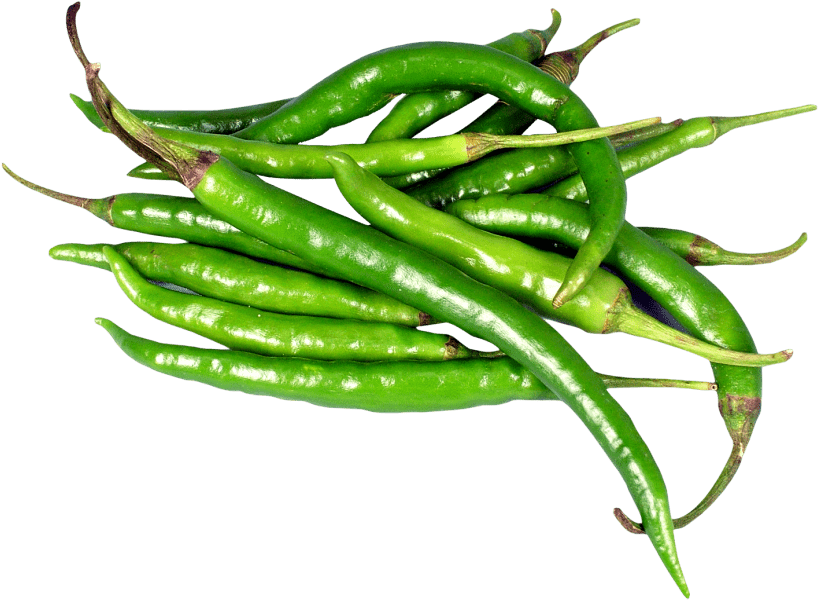

Pepper cuisine
 Capsicum fruits and peppers can be eaten raw or cooked. Those used in cooking are generally varieties of the C. annuum and C. frutescens species, though a few others are used as well. They are suitable for stuffing with fillings such as cheese, meat or rice.
Capsicum fruits and peppers can be eaten raw or cooked. Those used in cooking are generally varieties of the C. annuum and C. frutescens species, though a few others are used as well. They are suitable for stuffing with fillings such as cheese, meat or rice.
They are also frequently used both chopped and raw in salads, or cooked in stir-fries or other mixed dishes. They can be sliced vertically and fried, or chopped and incorporated into salsas or other sauces.
They can be preserved by drying or pickling. Dried peppers may be reconstituted whole, or processed into flakes or powders. Pickled or marinated peppers are frequently added to sandwiches or salads. Extracts can be made and incorporated into hot sauces.
Most of the capsaicin in a pepper is found in the interior ribs that divide the chambers of the fruit, and to which the seeds are attached. At the stem end of the pod, glands secrete the capsaicin, which then spreads throughout, but is concentrated on the ribs and seeds.
-
Chili pepper
The chili pepper (also chile, chile pepper, chilli pepper, or chilli) is the fruit of plants from the genus Capsicum which are members of the nightshade family, Solanaceae. Chili peppers are widely used in many cuisines as a spice to add heat to dishes. The substances that give chili peppers their intensity when ingested or applied topically are capsaicin and related compounds known as capsaicinoids.
-
Asparagus
Unlike most vegetables, where the smaller and thinner are the more tender, thick asparagus stalks have more tender volume to the proportion of skin. When asparagus have been too long in the market, the cut ends will have dried and gone slightly concave.
-
Tomato
 Tomatoes are used extensively in Mediterranean and Middle Eastern cuisines, especially Italian ones. The tomato has an acidic property that is used to bring out other flavors. This same acidity makes tomatoes especially easy to preserve in home canning as tomato sauce or paste. The first to commercially can tomatoes was Harrison Woodhull Crosby in Jamesburg, New Jersey.
Tomatoes are used extensively in Mediterranean and Middle Eastern cuisines, especially Italian ones. The tomato has an acidic property that is used to bring out other flavors. This same acidity makes tomatoes especially easy to preserve in home canning as tomato sauce or paste. The first to commercially can tomatoes was Harrison Woodhull Crosby in Jamesburg, New Jersey.